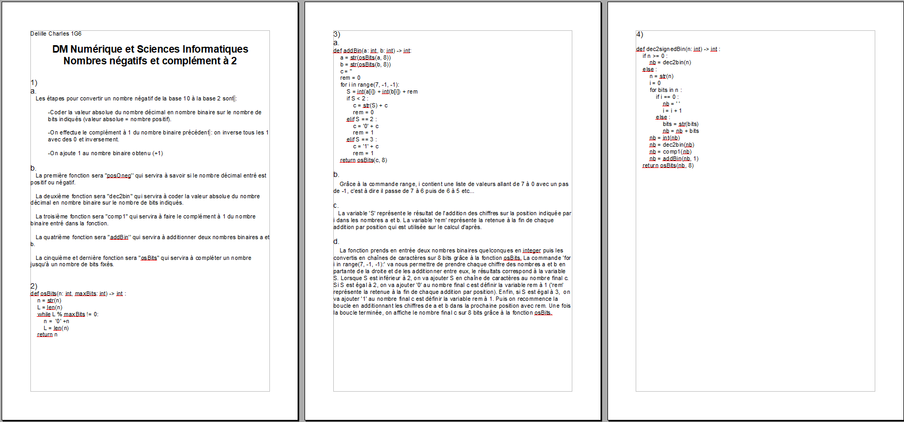
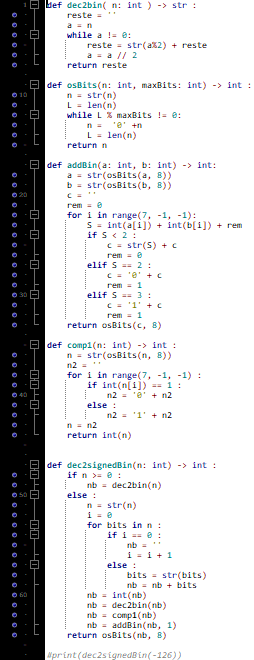
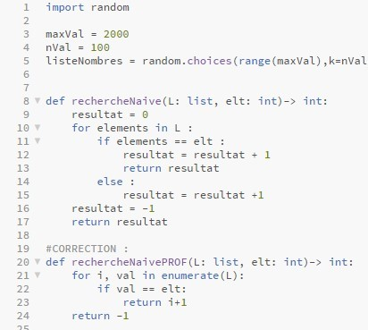
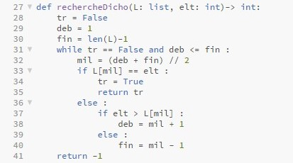
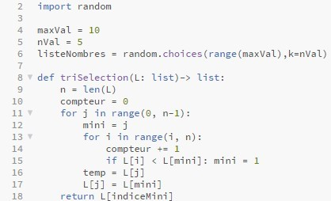
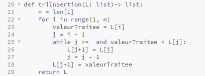

Voici mes projets de NSI en classe de première
Vous y trouverez :
Tout d'abord voilà le sujet du devoir maison : sujet du DM
Puis, voilà ma copie :
Et enfin, mes programmes du devoir maison :
Sujet : Travaux Pratique 1
Programme dit "naïf" :
Fiches de révision :
Algorithme de recherche dichotomique :
Fiches de révision :
Sujet : Travaux Pratique 2
Programme dit "naïf" :
Algorithme de tri par insertion :
Fiches de révision :